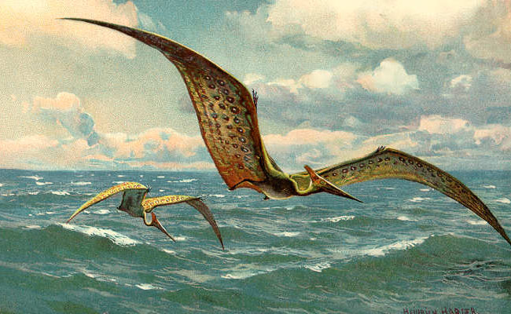

Prehistoric Flying Creatures
Archaeopteryx
lived in the Late Jurassic period, in what is now southern Germany.

Pteranodon
fossils are known primarily from the central United States.
Rhamphorhynchus
have been found in England, Tanzania, Spain, Bavaria, and Germany.